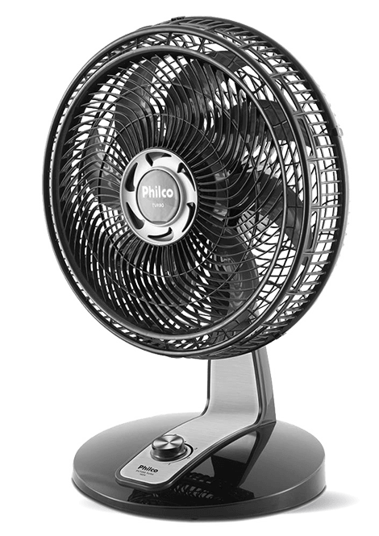

Máquinas térmicas existem em nosso dia a dia, para motores de combustão interna (movidos a gasolina, álcool,
diesel e querosene), máquinas a vapor (locomotivas e teares), termelétricas, geladeiras e condicionadores de
ar.
A importância das máquinas térmicas foi acompanhada pelo início da industrialização em vários países, pois à
medida que se iniciava o uso dessas máquinas
Você pode produzir em uma escala maior e também obter um desconto maior no valor de saída da unidade do
produto.

Como exemplo da primeira lei da termodinâmica, temos um motor de ventilador, que converte energia mecânica por meio de pás de ventilador em movimento. Os fios do motor do ventilador têm resistência e geram algum calor, portanto, parte da eletricidade é instantaneamente convertida em calor. A energia mecânica restante eventualmente se transforma em calor. Dessa forma, toda a eletricidade que você usar para operar o ventilador de teto aquecerá o ambiente, por isso é inútil deixá-los quando não há ninguém para sentir a brisa.
Como exemplo da segunda lei da termodinâmica, a fonte de calor do motor de um carro é o motor, e o combustível é queimado no motor. Desta fonte, cada ciclo irá retirar uma certa quantidade de calor. Parte dela é convertida em trabalho mecânico para fazer o carro andar, o que é chamado de energia útil, e a outra parte do calor não utilizado é descarregada na atmosfera através dos gases de escapamento, que é a fonte fria.


Quanto à eficiência de uma máquina térmica, ela pode ser definida como uma grandeza adimensional, dada pela relação entre o trabalho mecânico extraído da máquina térmica e a energia fornecida a ela na forma de calor. Basicamente, toda máquina térmica possui uma eficiência, que pode ser calculada pela relação entre o trabalho realizado pela máquina, a energia útil e o calor retirado da fonte de calor, utilizando a seguinte fórmula: r = T / Q1 Onde T é o trabalho realizado pela máquina e Q1 é o calor absorvido da fonte de calor.